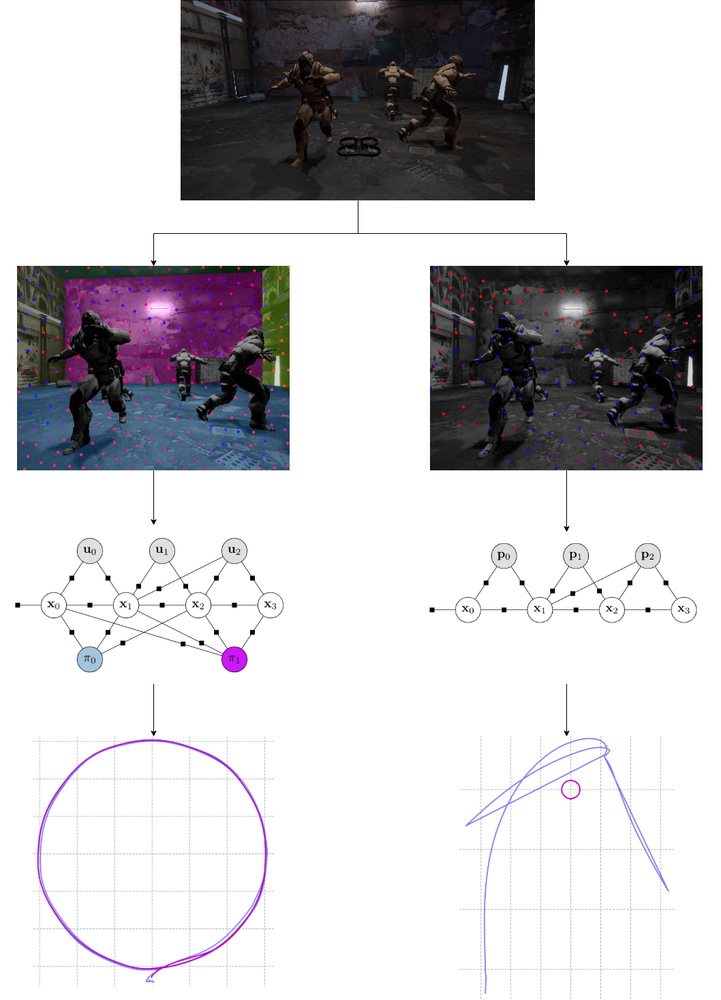
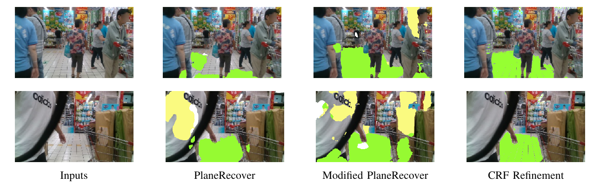
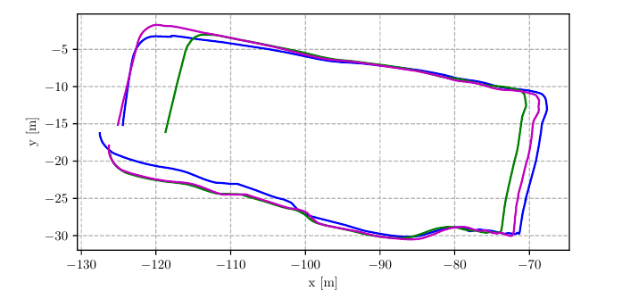

Modern visual-inertial navigation systems (VINS) are faced with a critical challenge in real-world deployment: they need to operate reliably and robustly in highly dynamic environments. Current best solutions merely filter dynamic objects as outliers based on the semantics of the object category. Such an approach does not scale as it requires semantic classifiers to encompass all possibly-moving object classes; this is hard to define, let alone deploy. On the other hand, many real-world environments exhibit strong structural regularities in the form of planes such as walls and ground surfaces, which are also crucially static. We present RP-VIO, a monocular visual-inertial odometry system that leverages the simple geometry of these planes for improved robustness and accuracy in challenging dynamic environments. Since existing datasets have a limited number of dynamic elements, we also present a highly-dynamic, photorealistic synthetic dataset for a more effective evaluation of the capabilities of modern VINS systems. We evaluate our approach on this dataset, and three diverse sequences from standard datasets including two real-world dynamic sequences and show a significant improvement in robustness and accuracy over a state-of-the-art monocular visual-inertial odometry system. We also show in simulation an improvement over a simple dynamic-features masking approach. Our code and dataset are publicly available.
Method
Method Here!

Figure 1. Overview: Motivated by the presence of large planar surfaces in man-made environments, we propose a monocular VIO system that estimates motion only from one or more planes in the scene based on their induced homographies, and ignoring all off-the-plane features. We show that this leads to improved robustness and accuracy in dynamic environments. blue path indicates the estimated trajectory and magenta path indicates the ground truth.

Figure 2. Plane Segmentation: Segmentation outputs for two challenging images in the OpenLORIS sequence, from the original model and the model modified
with our inter-plane loss are visualized. The output from our model is further refined with a dense-CRF, before being used by our VIO
system, and is also visualized here.

Figure 3. Result: Top-view comparison between RP-VIO-Single (blue),
VINS-Mono (green), and ground truth (magenta), on the
OpenLORIS market-1 sequence.